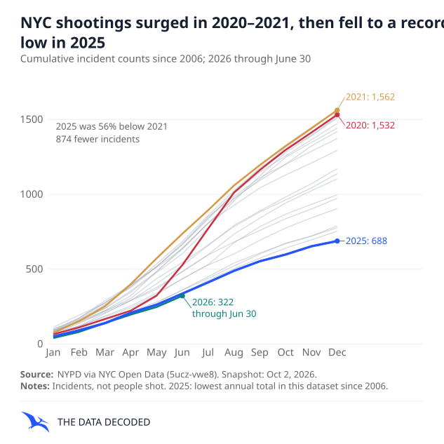
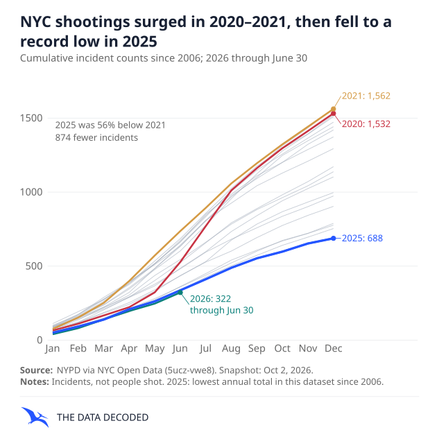

Comparison only; no brand decision. Identical 22 pt title, 14.5 pt subtitle/ticks, 4.6 mm labels/annotations, 13 pt metadata, 14 pt signature. 2112px square exports.
The matching amber labels remain faint at phone size in every treatment. Final font choice is pending.

